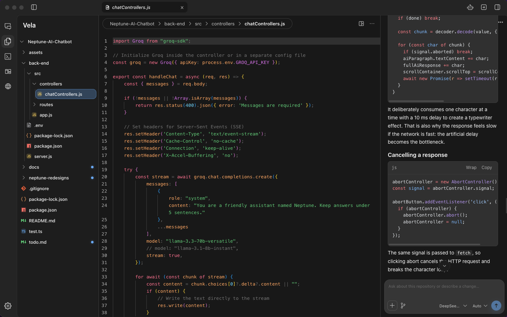

An editor you can work in.
Browse the file tree and edit with Monaco. Tabs and autosave keep your files close while you work with an agent.
Your editor, AI agents, terminal, and live diffs.
One desktop app. Powered by OpenCode.
macOS · OpenCode V2

Monaco, tabs, and autosave.
OpenCode sessions, side by side.
Live file changes and per-file diffs.
Open a repository and keep the files, conversation, and changes in the same window.
Browse the file tree and edit with Monaco. Tabs and autosave keep your files close while you work with an agent.
Choose your model and agent, attach files, or reference workspace files with @. Follow streamed responses, reasoning, and tool calls. Queue a follow-up while the current task is running.
Agent mode tiles up to eight sessions in one workspace. Each panel keeps its own conversation and context, so you can follow separate tasks side by side.
Vela watches your workspace and lists files touched during the session. Review a per-file diff when starting contents are available. Other changes are marked as observed.
Choose a folder. Browse the files and open what you’re working on in the editor.
Describe the change, add the relevant files, and follow the session beside your code.
Check the changed files, edit the result, and run your project in the integrated terminal.
Run commands in the current workspace with the integrated terminal. You can also switch an agent panel to the OpenCode TUI.
Pair the mobile companion from Settings → Mobile Setup. Access your sessions while Vela remains open on your desktop.
Vela runs agent sessions through OpenCode V2. Have opencode available on your PATH before starting a session.
git clone https://github.com/Tsohnle95/vela.git
cd vela
npm install
npm run devRequires Node 22.23.2 or newer on the 22.x line, npm, and OpenCode V2.
Linux and Windows are available for development, with less platform validation than macOS.